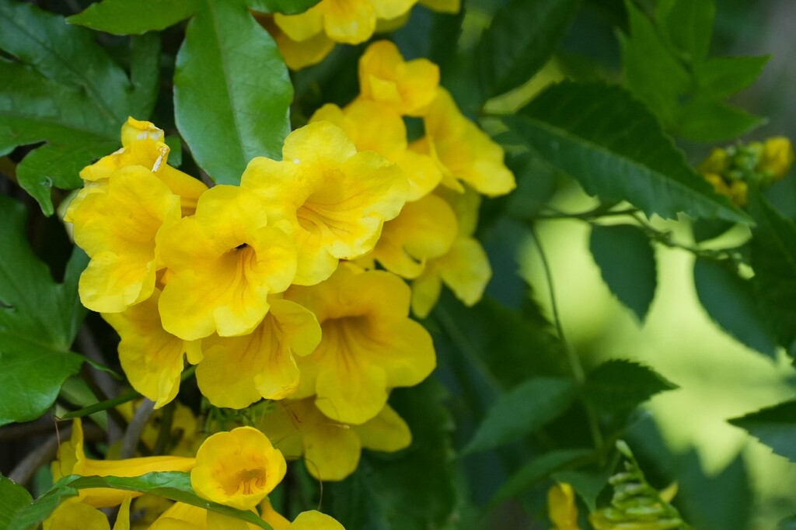

- Florida has a genuine claim on this plant — it is native here, though its nativity within Florida is debated. Historically abundant in the Florida Keys and coastal hammocks; now rare in the wild here, though common in cultivation throughout the tropics.
- The national flower of the Bahamas and the official flower of the US Virgin Islands. The name esperanza — hope — is what it is called across much of Latin America.
- The seed pods are long, slender, and bean-like — the plant is in the bignonia family, not the bean family, but the pods look similar enough to cause confusion.
- Blooms heavily after rain, which makes it reliable in Florida's wet season.
Native to South Florida (Miami-Dade, Monroe counties) and the Keys, with range extending through the Caribbean, Mexico, Central America, and South America to Argentina. Classified as native to South Florida by the Institute for Regional Conservation and the Florida Native Plant Society. Member of Bignoniaceae — the trumpet vine family, same as Jacaranda.
- Yellow Trumpet Flower is named the national flower of the Bahamas and the official flower of the US Virgin Islands — an unusual distinction for a plant that most Florida gardeners consider a common landscape shrub. Across Latin America it is called esperanza, meaning hope, an association with its tendency to bloom heavily after rain and its resilience in difficult conditions.
- Tecoma stans var. stans is classified as native to South Florida and the Keys by the Institute for Regional Conservation and the Florida Native Plant Society. It grows naturally in coastal hammocks and disturbed areas in Miami-Dade and Monroe counties and behaves ecologically as a Florida native throughout South and Central Florida.
- It is a documented butterfly nectar plant with a long bloom season, and the tubular yellow flowers are reliably visited by hummingbirds. The seed pods are long, slender, and woody — superficially bean-like but belonging to the Bignoniaceae family, not Fabaceae.
- There is a reason it seems to track the weather. After a dry spell the plant can look quiet and almost dormant, then flush into heavy bloom within days of a summer thunderstorm — its flowering pulses with the rains rather than the calendar. In Florida's wet season that makes it something close to a living rain gauge, brightest in the weeks the storms roll through.
- Look closely at the flowers and you may catch a bit of insect larceny. Hummingbirds and butterflies work the blooms the legitimate way, reaching down the tube and brushing past the pollen. Large native carpenter bees (Xylocopa), too bulky to push inside, often take a shortcut — chewing a small hole through the base of the flower to steal the nectar without touching the pollen at all.
- It is called nectar robbing, and once you spot the telltale slit at a flower's base, you start seeing it everywhere.
A documented butterfly and hummingbird nectar plant with a very long bloom season. The bright yellow tubular flowers are visited by a range of butterflies and by Ruby-throated Hummingbirds during migration.
The plant blooms heavily after rain, which aligns its peak nectar production with Florida's wet season and the period of highest pollinator activity. Seeds are eaten by some birds.
Bright yellow, tubular, five-lobed, in clusters at branch tips. Bloom period: nearly year-round in South Florida with peak flowering in warm months, especially after rain. Fast to reflower after pruning.
Long, slender, woody seed pods, 4 to 8 inches long, superficially resembling bean pods. Seeds wind-dispersed when pods split. The plant self-seeds freely.
Opposite, pinnately compound with 5 to 13 sharply toothed, lance-shaped leaflets. Medium green.
Fast-growing semi-evergreen shrub to small tree. Typically 3 to 6 feet as a shrub; can reach 10 to 20 feet as a multi-stemmed small tree with age.
The clusters of bright yellow tubular flowers at branch tips are showy and distinctive. The long slender seed pods hang from branches after flowering. The pinnately compound leaves help distinguish it from similarly yellow-flowered plants — including the unrelated Tabebuia and Handroanthus trumpet trees.
This isn't an edible plant; it has some traditional medicinal uses but isn't eaten. Its toxicity risk is generally low — avoid ingestion as a precaution.
For dogs it isn't considered highly toxic, but eating plant material may cause stomach upset. Contact your vet if a pet eats a significant amount.


- © Rhonda Olschefskie (CC-BY-NC), via iNaturalist
- © Randall Carter (CC-BY-NC), via iNaturalist
- © Franky McArthur (CC-BY-NC), via iNaturalist
- © Maria Escobar (CC-BY-NC), via iNaturalist